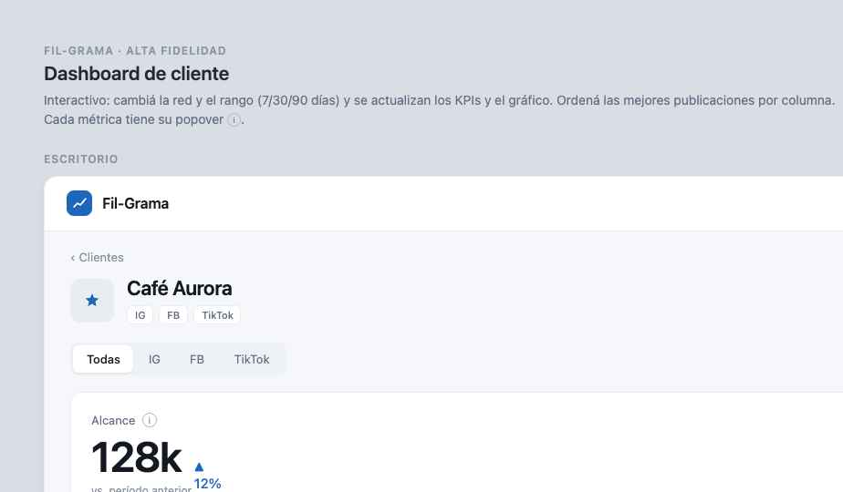

Fil-Grama
Social media analytics for agencies — Instagram, Facebook, and TikTok in one place.
Social networks' APIs don't expose full historical series: each one only gives a limited data window. Fil-Grama runs a daily job that queries each client's connected accounts and stores metric snapshots in its own database — like a line printer logging everything, day by day, on continuous paper. With that history, it builds per-client dashboards, account comparisons, and PDF reports.
I defined the data model and architecture, designed the whole interface from wireframe to high fidelity, implemented backend and frontend, built the TikTok and Meta integrations, set up the infrastructure, and handle deployments.
01Why Fil-Grama exists
An agency managing social accounts for several clients needs to compare performance across accounts and over time, but Instagram, Facebook, and TikTok don't offer long histories: each API only exposes a limited window. Without its own steady capture process, that history gets lost.
Fil-Grama captures it with a daily job that saves metric snapshots (reach, followers, interactions, engagement) in its own database, and uses that history to build per-client dashboards, account comparisons, and PDF reports.
02Modular backend, API contract as source of truth
Backend in Java with Spring Boot, split into modules by domain (auth, clients, accounts, OAuth, Meta integration, metrics, sync, reports, media, storage). PostgreSQL with versioned migrations. The React frontend consumes the API contract through an auto-generated client (Orval), so backend and frontend never drift out of sync.
Refresh token rotation
If a stolen refresh token gets reused, it's detected and its entire family is revoked — not just that token.
Data model — core
14 tables in the schema; this is the core relevant to the dashboard and the daily job.
03Concrete backend details
- 001167+ testsIncludes e2e tests with Testcontainers against a real Postgres, not just mocks.
- 002Refresh tokens with rotationIf a stolen token gets reused, it's detected and the entire family gets revoked, not just that token.
- 003OAuth tokens encrypted at restAES-GCM; never stored or exposed in plain text.
- 004Errors in RFC 7807A single exception handler; consistent
problem+jsonacross the whole API. - 005Multi-tenant from the data model14 tables with
client_id, designed to scale to SaaS without a rewrite.
04TikTok and Meta, with their real status
Integrations implemented in sandbox mode; approval for Meta's metrics APIs is in progress. I report the status as it is, without inflating it: this is a product under construction.
End-to-end OAuth with PKCE, token refresh with rotation, and a branded QR connection flow. It's the most mature integration: the only one fully tested, from authorization through reading metrics. The publishing API requires a separate TikTok audit, not yet enabled.
Implemented in code (OAuth, metrics reading), but Meta requires App Review with Advanced Access and business verification before enabling it for real client accounts. Right now it runs in Development mode, only with my own test accounts, while approval moves forward.
05Actively in development, on the way to SaaS
Fil-Grama doesn't have real clients running in production yet: the focus is on getting the foundation right — architecture, integrations, infrastructure — before adding users. The next major milestone is getting the Meta integration fully enabled.
- [x]Backend and frontend deployed — VPS on Vultr + Cloudflare Pages, running.
- [x]TikTok integrated — OAuth and metrics reading in sandbox.
- [~]Meta under review — App Review and business verification in progress.
- [~]Automated reports — PDF generation per client and date range.
- [ ]Content publishing — pending TikTok's API audit.
- [ ]Multi-tenant SaaS — evolving from an internal tool into a product.
06How it's deployed
I rented the server, set up the connections, and deployed both parts of the system: backend on a Vultr VPS, with Docker Compose behind Caddy as a reverse proxy and PostgreSQL, and frontend on Cloudflare Pages, with automatic deployment on every push to the main branch.
For development I use a Cloudflare tunnel to the local backend: I test against a real domain without exposing the dev machine. For security, this page doesn't include IPs, credentials, tokens, or internal URLs.
07The flows and screens, browsable
A curated selection from the 50 designed screens: analytics, account comparison, posts, reports, and platform. Each one opens interactively, exactly as designed, in desktop and mobile.
From wireframe to high fidelity
The same screen (Audience): structure first, visual identity after.


08Real screenshots of the platform running
The app running in production, not mockups: per-client dashboard, a post's detail view, account comparison, and the report generator exportable to PDF.



Screenshots taken from Oh My Bunny — my own venture, which I use as a production test account while Meta's approval moves forward. The numbers are low because it's a real, recently connected account, not a demo with inflated data.
09Technology inventory
Backend
- Java · Spring Boot
- REST APIs · JWT
Data
- PostgreSQL · Flyway
- Relational modeling
Frontend
- React 19 · TypeScript
- Vite · TanStack Query
Integrations
- OAuth 2.0 · PKCE
- TikTok API · Meta Graph API
Infrastructure
- Vultr VPS · Docker Compose
- Caddy · Cloudflare Pages · R2
AI
- Embedded MCP server
- Read-only tools over reports